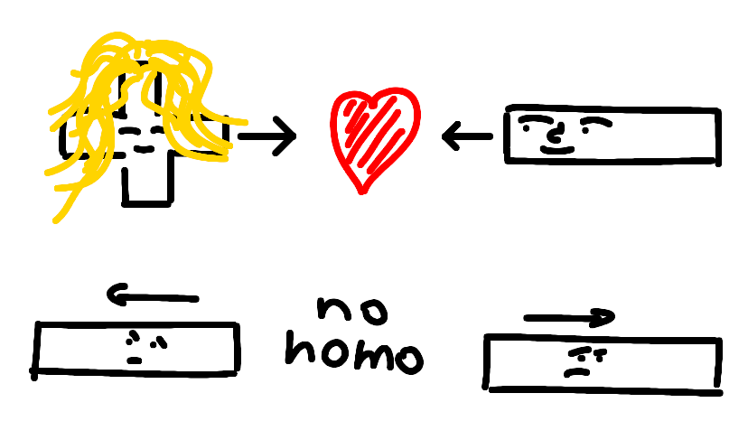
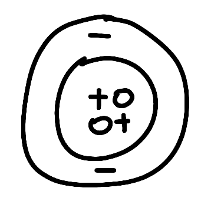
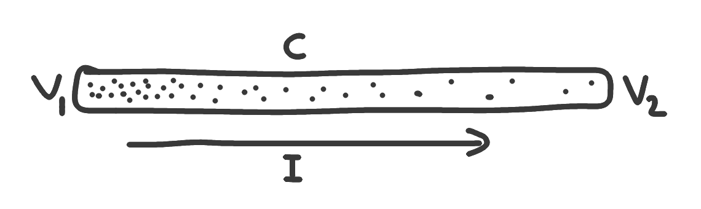
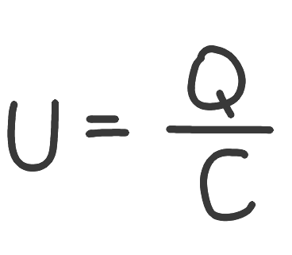
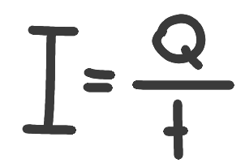

As I promised, I'm starting with the very basics on electronics. Today, we're going to talk about what electricity actually is and how we can wield its powers and get it to help us with physical, and, our goal - theoretical tasks.
chargesTechnically speaking, we can define electricity as interactions between electric charges. Electric charges are carried by elementary particles, such as proton(+) and the electron(-). If you remember playing with magnets as a kid, you probably know that equal charges repel and opposite charges attract, much like in the heterosexual word the previous generations wanted to raise us into. Positive protons (together with neutral neutrons, but like ;- I'm not a scientist) form the nucleus of an atom. The nucleus is then covered by electron floating above it, attracted by the interactions between the charges(the reason they don't completely fall together is because of the uncertainty principle, but look that up somewhere else). Now; the electrons also don't want to stick together, so all of them rather take different paths, known as orbitals, which are organized into layers, depending on their energy level. |

fig.1: the interactions between charges |
|

fig.2: a basic interpretation of an atom |
If an atom is set up correctly, it can have some free electrons, which are pretty comfortable with leaving the atom, if they find a better spot. Atoms like this can often also temporarily accept more electrons. If the amount of electrons is greater or smaller than the amount of protons, the atom will want to equalize its charges with another atom. Say, we have two atoms next to each other, which can transfer charges between themselves. if one of the atoms has two extra electrons, it will give the other atom one of its electrons to equalize charges. Now imagine you get a full line of these atoms, with more electrons on one end than the other. The charges will try to equalize, resulting in a current through the line. This concept of moving electrons to equalize charges forms the foundation of electronics. |
|

fig.3: a fluid analogy of a wire what you need to knowVoltage - U - measured in Volts - V Current - I - measured in Amperes - A Capacity - C - measured in Farads - F Charge - Q - measured in Coulombs - C |
the fluid analogyOne way to make sense of electricity is to imagine the electrons as particles of gas in a container. If the pressure of the gas is greater on one side than the other, a current (I[A])(that's how they call it in electronics) is formed until the system is brought into an equilibrium(fig.3). The amount of current is dependent on the difference in pressure (the electric voltage (U[V])) and a constant we'll talk about in the next article. ELECTRIC CURRENT MEASURES THE AMOUNT OF CHARGE OVER TIME, NOT THE SPEED OF THE PARTICLES. You may think of the voltage as being the pressure of the gas at a certain point. Imagine a container with a given volume filled with a given amount of gas particles. The amount of particles - the electric charge has a direct effect on the pressure(voltage). In electronics, we call the volume of the container the electric capacity and it will be very useful later. Charge is measured in Coulombs, where one Coulomb represents the charge of 6.24150965×1018 electrons. Current measures how much charge is being transferred in a given amount of time. |
VOLTAGE IS ALWAYS MEASURED BETWEEN TWO POINTS. No object in real life can have zero charge, as charge, much like distance or other units, is relative. Usually, in electronics, we define a point called ground, which, as the name suggests, can be sometimes physically connected to actual ground, which we use as a reference point for all our voltages.
pretty intuitive
|  |  |
okay, that's all for today